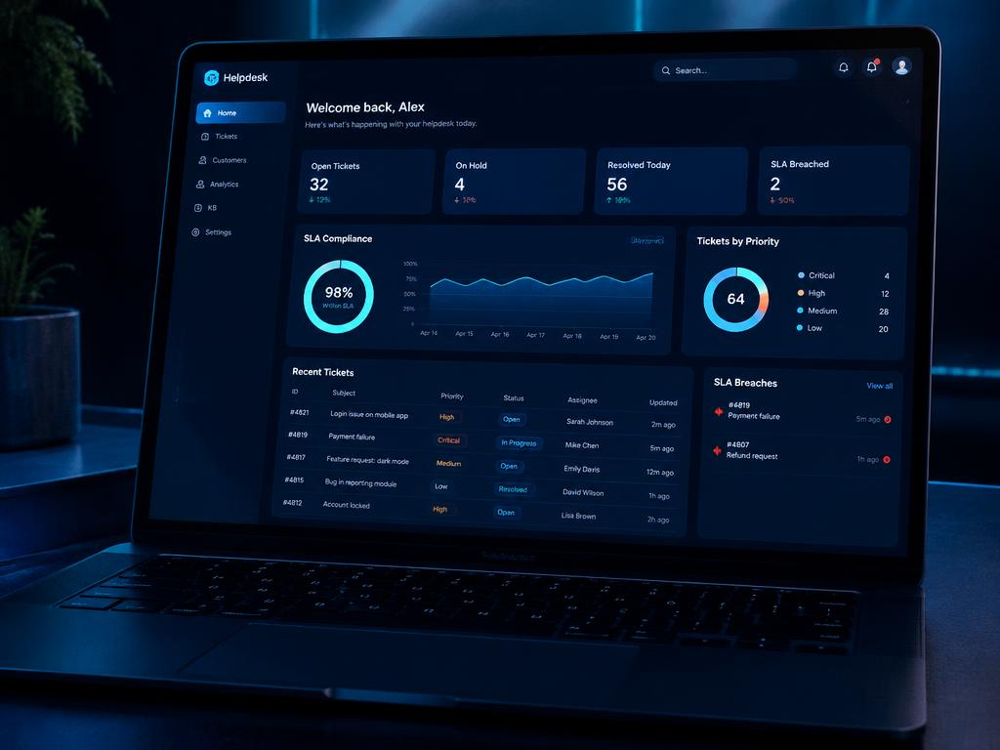
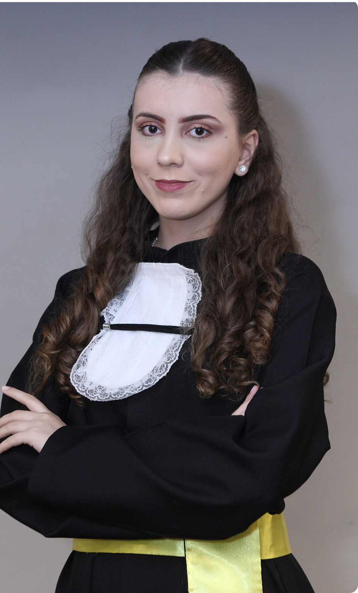
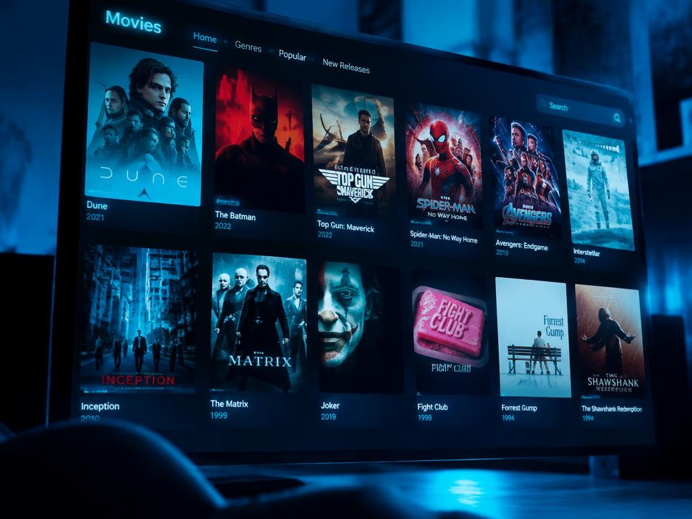
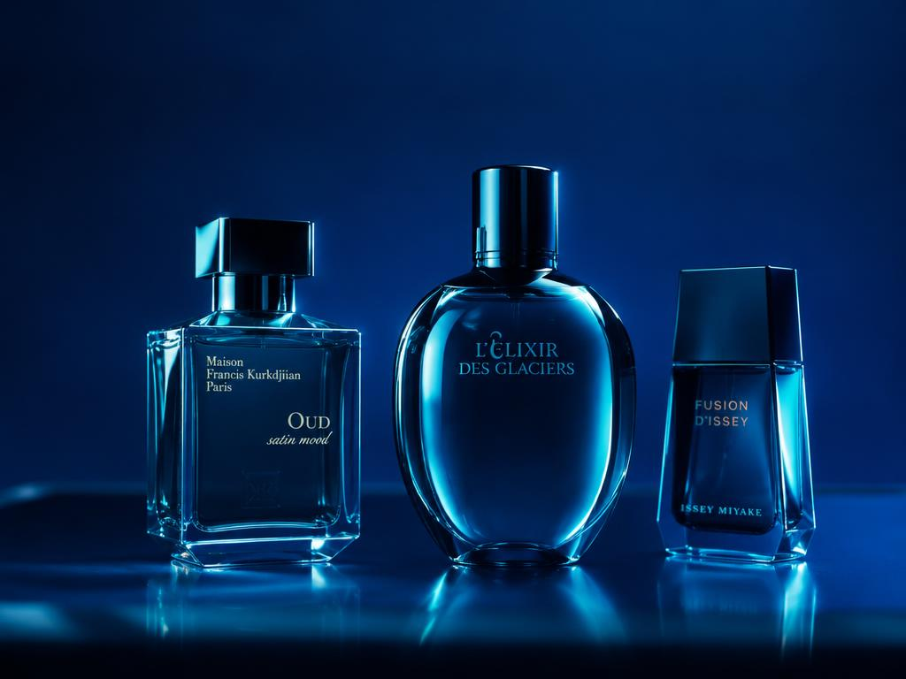

HelpDesk Core API
.NET 8SQLiteDocker
Sistema Full-Stack em .NET 8 com cálculo de SLA e interface Glassmorphism.

Portfólio

Olá, eu sou a Ana Elisa
Técnica em Informática em Belo Horizonte. Aplico lógica de programação, redes e banco de dados para resolver problemas reais — em busca de um estágio onde eu possa aprender rápido e entregar resultado desde o primeiro dia.
Sistema Full-Stack em .NET 8 com cálculo de SLA e interface Glassmorphism.

Clone/Simulador da Netflix aplicando POO, herança e gestão de catálogo.

E-commerce responsivo para linha de cosméticos e perfumaria.

github.com/ananarcisio
Formada Técnica em Informática pelo Colégio Cotemig (94,67% de aproveitamento — The Best of The Class) e cursando Análise e Desenvolvimento de Sistemas, com conclusão prevista em 2027.
De aluna destaque a professora: passei pelo suporte ao usuário, manutenção de hardware e sala de aula. Isso me deu visão prática de infraestrutura e uma didática que uso todos os dias.
Comigo